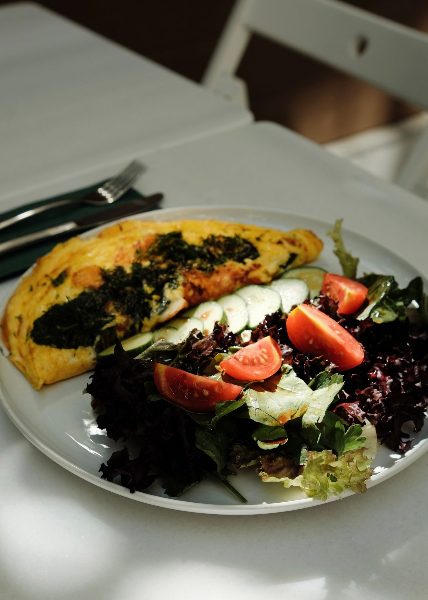
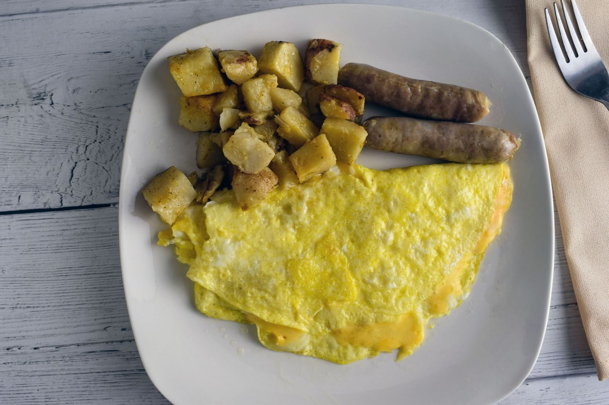
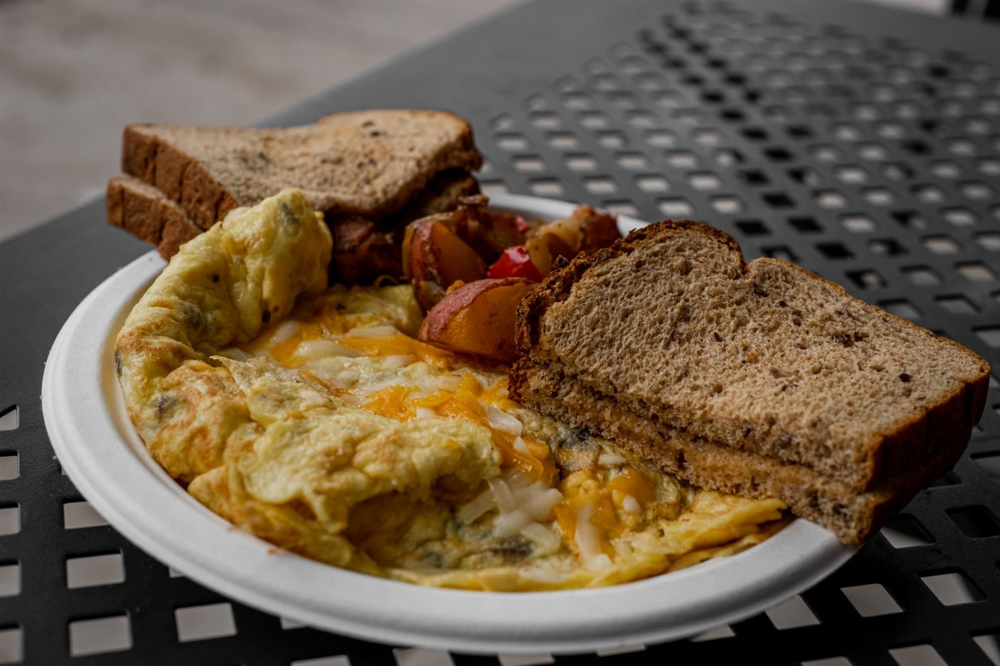

From the kitchen



Pascagoula, Mississippi · Breakfast and lunch
Juanita's Kitchen at 3676 Pascagoula St cooks traditional Mexican and Southern recipes for breakfast and lunch. Breakfast chimichangas, omelettes, fried catfish and grits, and Rancheros Eggs, with takeout and delivery available.

Juanita's Kitchen brings Mexican and Southern cooking together in a family-friendly room in Pascagoula. The dining room is wheelchair-accessible, and takeout and delivery are available.
Breakfast is the heart of the menu: a breakfast chimichanga with hashbrowns, a fully loaded omelette, a vegetable omelette, and Rancheros Eggs. Fried catfish and grits rounds out the Southern side of the menu.

